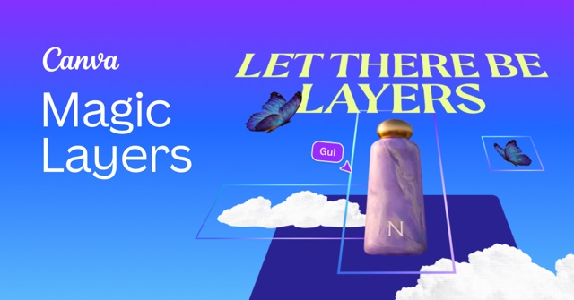

Magic Layers Canva
Turns a flat design into an editable layered layout, so text, objects, and colors can be changed without regenerating the image. Contributed during my internship at Canva CORE.
Token Foundry, Alibaba Token Hub
I am a Member of Technical Staff at Token Foundry, Alibaba Token Hub, working on video foundation model pretraining, with a primary focus on Reference-to-Video generation.
I received my Ph.D. from LeapLab at Tsinghua University in 2026. During my Ph.D., I interned at Microsoft Research Asia, Alibaba DAMO Academy, and Canva CORE.

Turns a flat design into an editable layered layout, so text, objects, and colors can be changed without regenerating the image. Contributed during my internship at Canva CORE.
* denotes equal contribution.